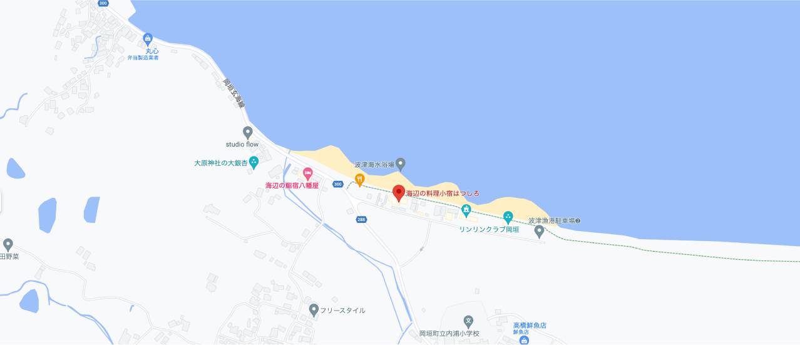

交通案内
交通案内

お車でお越しの方
北九州市内から
［所要時間／約45分］
小倉ICから北九州都市高速3号線・1号線・4号線・5号線で東田ICまで約10分、東田ICから国道3号線・県道286号線・国道495号線・
県道288号線で当館まで約35分。
福岡市内から
［所要時間／約55分］
千代ICから都市高速1号香椎線で貝塚JCTまで約5分、貝塚JCTから福岡都市高速4号粕谷線・九州縦貫自動車道で古賀ICまで約15分、
古賀ICから国道3号線・福間宗像玄海線・国道495号線・県道288号線で当館まで約35分。
福岡空港から
［所要時間／約1時間10分］
福岡空港から県道551号線で榎田ICまで約5分、榎田ICから福岡都市高速環状線で千鳥橋JCTまで約5分、千鳥橋JCTから
福岡都市高速1号香椎線で香椎東ICまで約10分、香椎東ICから国道3号線・県道97号線・国道495号線・県道288号線で当館まで約50分。
宗像市内から
［所要時間／約20分］
宗像市内から県道97号線・国道495号線・県道288号線で当館まで約20分。
筑豊から
［所要時間／約40分］
筑豊から県道27号線・国道495号線・県道288号線で当館まで約40分。
新大阪駅から
［所要時間／約3時間5分〜3時間12分］
JR新大阪駅から山陽新幹線でJR小倉駅まで約2時間15分、JR小倉駅から鹿児島本線 区間快速でJR海老津駅まで約35分、
JR海老津駅からコミュニティバス 波津線で波津海水浴場前バス停まで約20分、波津海水浴場前バス停から徒歩で当館まで約2分。
または、JR海老津駅から車・タクシーで当館まで約15分。
博多駅から
［所要時間／約1時間〜1時間7分］
JR博多駅から鹿児島本線 区間快速でJR海老津駅まで約45分、JR海老津駅からコミュニティバス 波津線で波津海水浴場前バス停まで
約20分、波津海水浴場前バス停から徒歩で当館まで約2分。または、JR海老津駅から車・タクシーで当館まで約15分。
小倉駅から
［所要時間／約50〜57分］
JR小倉駅から鹿児島本線 区間快速でJR海老津駅まで約35分、JR海老津駅からコミュニティバス 波津線で波津海水浴場前バス停まで
約20分、波津海水浴場前バス停から徒歩で当館まで約2分。または、JR海老津駅から車・タクシーで当館まで約15分。
羽田空港から
［所要時間／約3時間〜3時間7分］
羽田空港から飛行機で福岡空港まで約1時間55分、福岡空港から空港線 各停でJR博多駅まで約5分、JR博多駅から鹿児島本線 区間
快速でJR海老津駅まで約45分、JR海老津駅からコミュニティバス 波津線で波津海水浴場前バス停まで約20分、波津海水浴場前バス停から
徒歩で当館まで約2分。または、JR海老津駅から車・タクシーで当館まで約15分。
関西国際空港から
［所要時間／約2時間20分〜2時間27分］
関西国際空港から飛行機で福岡空港まで約1時間15分、福岡空港から空港線 各停でJR博多駅まで約5分、JR博多駅から鹿児島本線 区間
快速でJR海老津駅まで約45分、JR海老津駅からコミュニティバス 波津線で波津海水浴場前バス停まで約20分、波津海水浴場前バス停から
徒歩で当館まで約2分。または、JR海老津駅から車・タクシーで当館まで約15分。
福岡空港から
［所要時間／約1時間5分〜1時間12分］
福岡空港から空港線 各停でJR博多駅まで約5分、JR博多駅から鹿児島本線 区間快速でJR海老津駅まで約45分、JR海老津駅から
コミュニティバス 波津線で波津海水浴場前バス停まで約20分、波津海水浴場前バス停から徒歩で当館まで約2分。または、JR海老津駅から
車・タクシーで当館まで約15分。
駐車場・送迎について
お電話でのお問い合わせは TEL
093-283-0001
（電話受付時間11：00〜21：00）
| 駐車場 | 有り 15台 無料 先着順 |
| 送迎 | 送迎（条件あり）※詳しくはお問い合わせください。TEL 093-283-0001 |
アクセスマップ

海辺の料理小宿 はつしろ
〒811-4202 福岡県遠賀郡岡垣町原670-14
TEL 093-283-0001
〒811-4202 福岡県遠賀郡岡垣町原670-14
TEL 093-283-0001

交通お役立ちリンク
| NEXCO西日本 | https://www.w-nexco.co.jp/ |
| JR九州 | http://www.jrkyushu.co.jp/ |
| JR東海 | https://jr-central.co.jp/ |
| 岡垣町役場（コミュニティバス） | http://www.town.okagaki.lg.jp/s029/010/050/070/20150710093311.html |
| 福岡空港 | https://www.fukuoka-airport.jp/ |
| JAL | https://www.jal.co.jp/jp/ja/ |
| ANA | https://www.ana.co.jp/ |
| 福岡市地下鉄 | https://subway.city.fukuoka.lg.jp/ |
| JR九州バス | https://www.jrkbus.co.jp/ |
| 西鉄バス | https://www.nishitetsu.jp/bus/ |
| 福岡観光バス | https://fukuoka-kanko.co.jp/ |